يكشف تسرّب ذاكرة النواة
حين يكون السبب تعريفًا معيبًا، لا يظهر في أي برنامج. الأداة تقرأ مجمّع الذاكرة (Non-paged pool) وتربط الوسم بالتعريف المرجّح لتعرف ما الذي تحدّثه.
- برامج 3.1 GB
- مشتركة 1.0 GB
- نواة (Non-paged) 9.8 GB
- مخزّنة 1.2 GB
- حرة 0.9 GB
افتح ملفًا واحدًا، واعرف خلال دقيقة أين تذهب ذاكرتك فعلًا: تسرّب في تعريف (Driver)، ذاكرة خارج كل العمليات، أو برنامج متخفٍّ. مع تقرير واضح بالعربية أو الإنجليزية تقدر ترسله لمن يساعدك.
أول مرة؟ اقرأ طريقة الاستخدام بالصورافتح الملف RAM-Doctor.bat من مجلد التنزيلات. إن ظهرت رسالة «Windows protected your PC» فاضغط More info ثم Run anyway، ثم وافق على نافذة الصلاحيات بـ «نعم».
اضغط زر التنزيل. ملف واحد صغير، بدون فك ضغط وبدون تثبيت.
انقر نقرتين على الملف ثم اختر «نعم» في نافذة ويندوز. الصلاحيات لازمة لقراءة ذاكرة النظام.
انتظر نحو دقيقة. تظهر النتيجة بألوان واضحة، وتقدر تفتح التقرير الكامل أو تعزل ما يستحق.
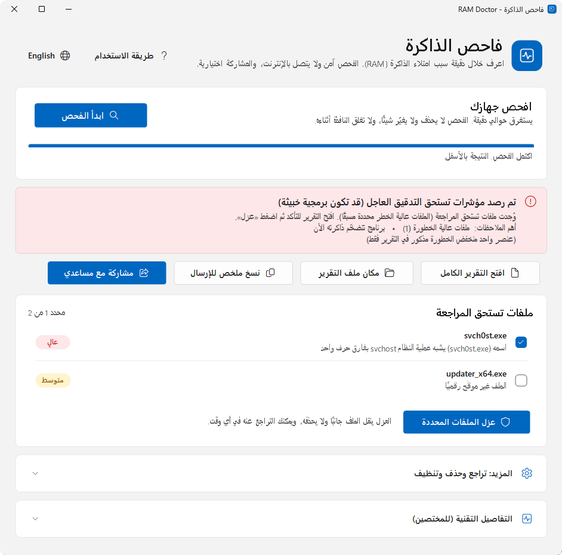
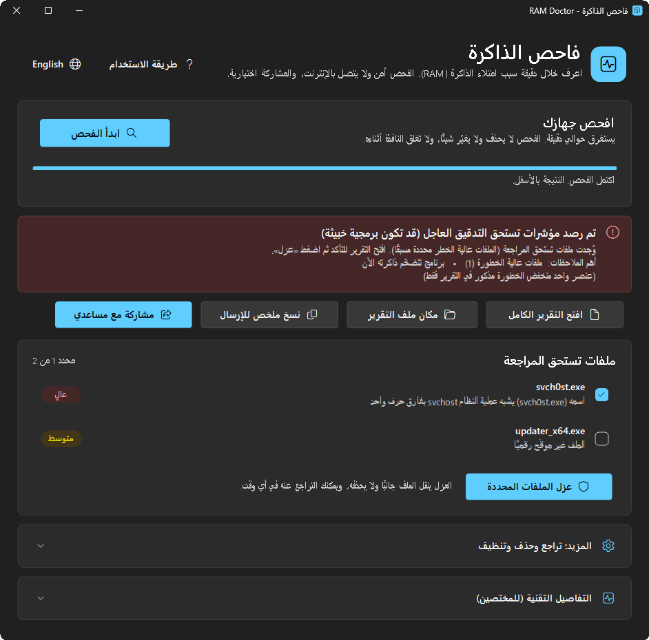
تصميم يشبه ويندوز 11، يتبع الوضع الفاتح والداكن ولون التمييز عندك، وبأزرار كبيرة وواضحة. بالعربية أو الإنجليزية، وبزر يبدّل اللغة فورًا.
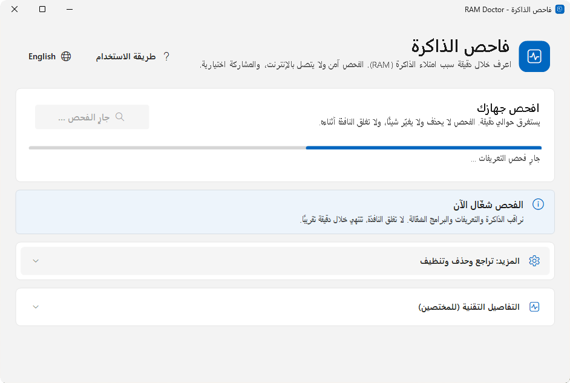
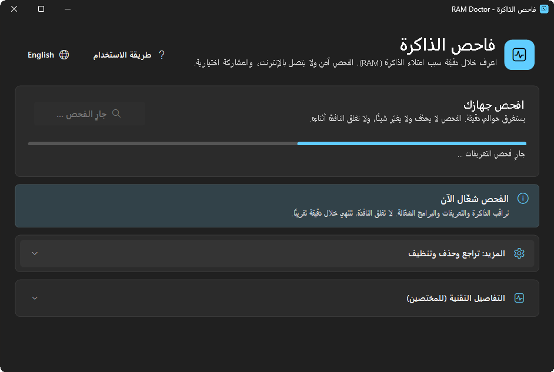
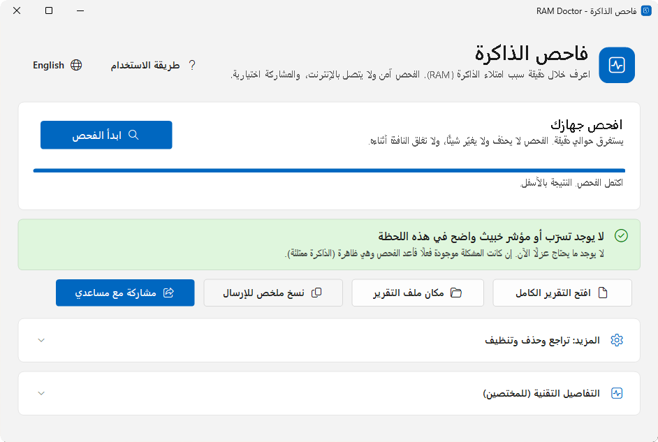
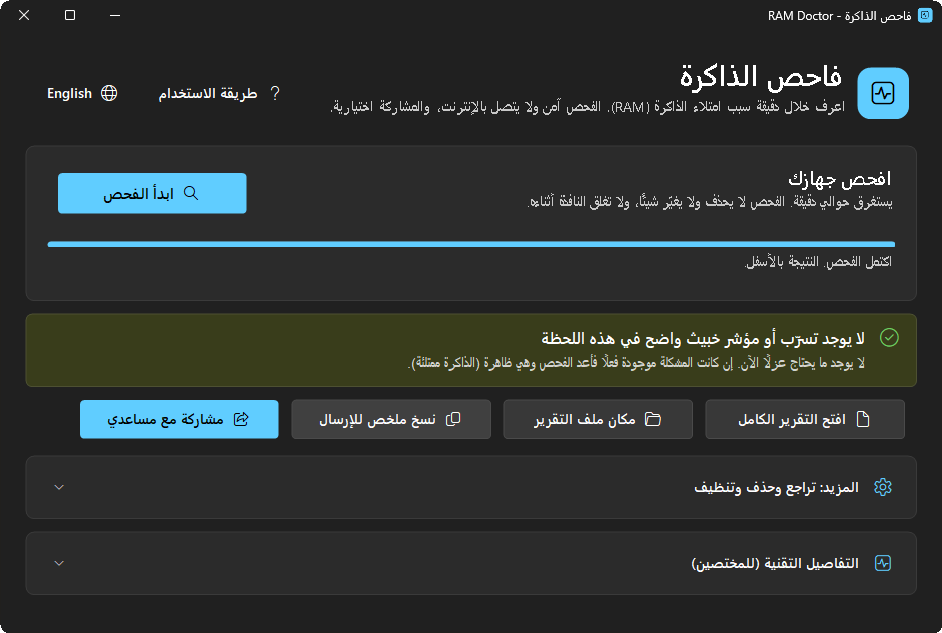
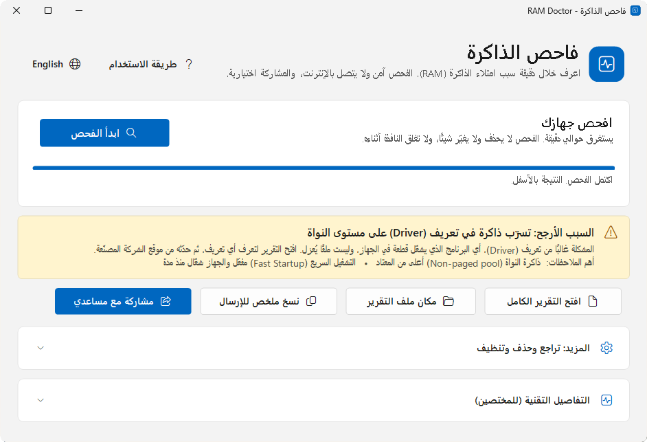
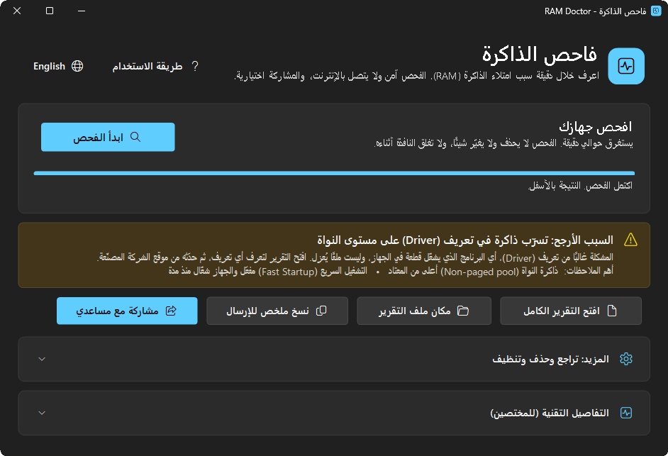
حين يكون السبب تعريفًا معيبًا، لا يظهر في أي برنامج. الأداة تقرأ مجمّع الذاكرة (Non-paged pool) وتربط الوسم بالتعريف المرجّح لتعرف ما الذي تحدّثه.
يسأل النواة مباشرة عن كل رقم عملية ويقارنه بقوائم النظام، فيلتقط ما يتخفّى عن مدير المهام.
التوقيع الرقمي، مكان التشغيل، الاسم، سطر الأوامر، والاتصال بالشبكة، مع شرح لسبب كل حكم.
يوقف العملية ويعطّل تشغيلها التلقائي وينقل الملف جانبًا. وبضغطة واحدة ترجع الأمور كما كانت.
ملف واحد نحو 560 KB، يفك نفسه في مجلد مؤقت مقفول للمدير فقط ويُحذف عند الإغلاق. الفحص يستهلك نحو 110 MB من الذاكرة في ذروته ويعمل بأولوية منخفضة، ويستغرق نحو دقيقة، وبدون أي تثبيت.
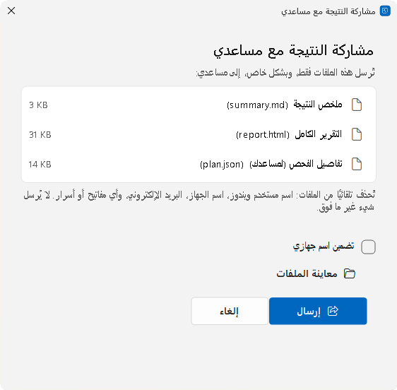
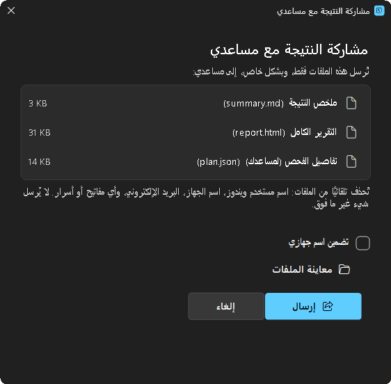
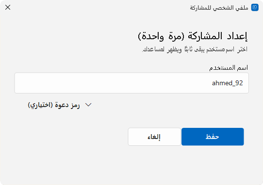
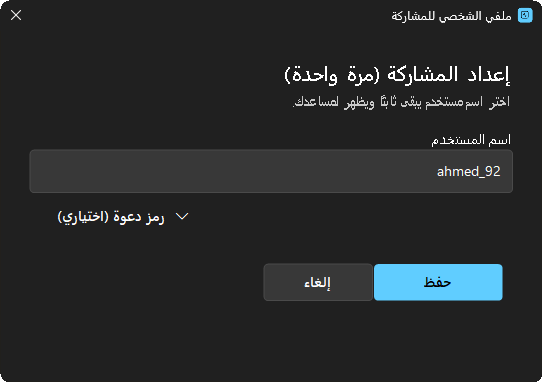
ملخص قصير ومنقّح (بدون اسم المستخدم أو اسم الجهاز) تلصقه في أي محادثة ليفهم من يساعدك الوضع فورًا.
التقرير الكامل ملف HTML واضح (بالعربية أو الإنجليزية)، فيه بصمة SHA-256 لكل ملف مشبوه للتحقق منها في VirusTotal. زر واحد يفتح مكانه لترسله.
بعد الفحص يُحفظ تقرير بتصميم نظيف يعمل بدون إنترنت، تفتحه في المتصفح أو ترسله لمن يساعدك.
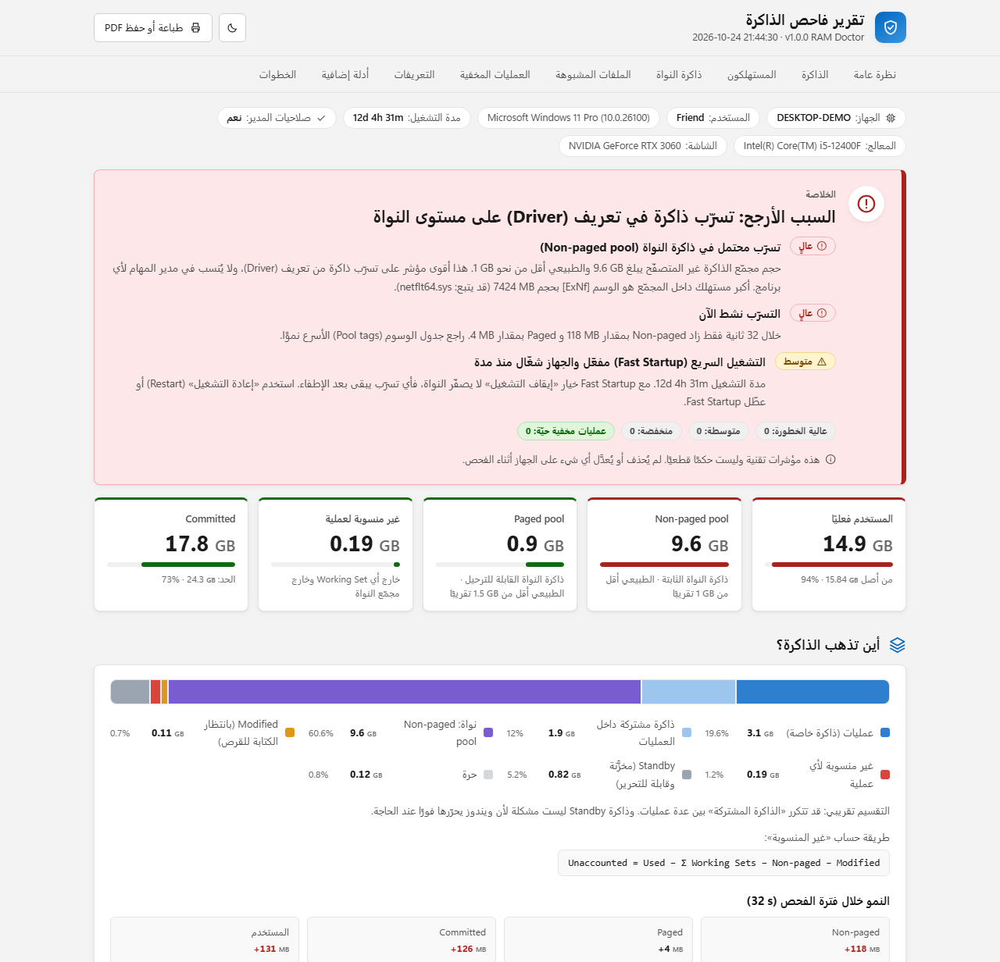
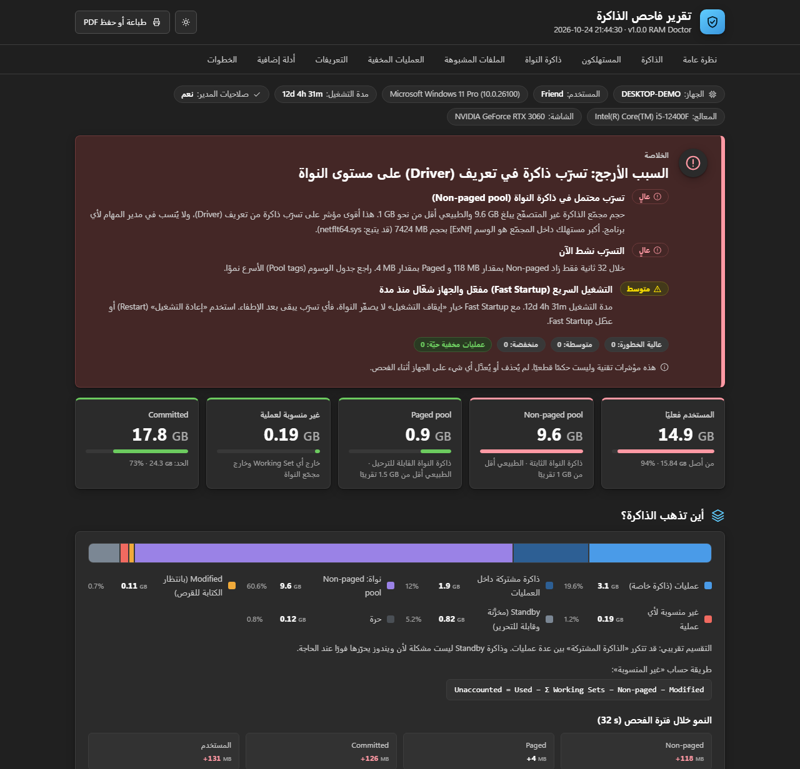
لا نخفي شيئًا: هذه كل الملفات التي قد تتركها الأداة، وكل ما لا تفعله أبدًا.
لا يوقف شيئًا ولا يغيّر شيئًا، ولا يستخدم الشبكة أثناء الفحص. أي إجراء يأتي بعد اختيارك أنت.
ملفات النظام والملفات الموقّعة من مايكروسوفت لا تُعزل أبدًا.
إن تغيّر الملف بين الفحص والعزل (SHA-256) يتوقف احتياطًا.
تُنشأ تلقائيًا إن كانت حماية النظام مفعّلة.
الملفات والخدمات والتشغيل التلقائي ترجع كما كانت تمامًا.
زر مستقل بتحذير واضح، ولا يحدث تلقائيًا أبدًا.